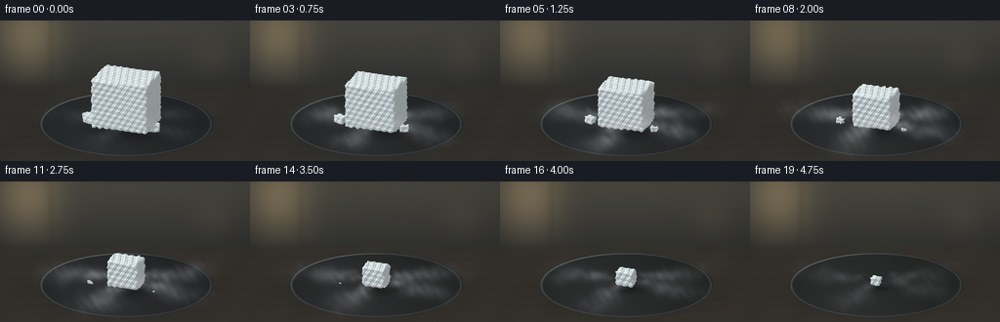
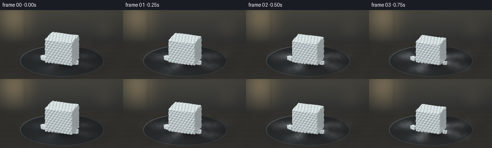

CODING AGENTS AS PIXEL WORLD MODELS
traex/GPT-6.1-Sol · phygen_116
点击播放 · 原生 RGB 像素
逐轮保存的候选
回放视频、检查图与代码变化。
每份候选均可单独播放。实际图片检查记录在下方工具轨迹中。
候选 01播放与检查图
点击播放 · 原生 RGB 像素


展开代码变化
--- 上一保存版本
+++ 本次保存版本
@@ -0,0 +1,225 @@
+"""Procedural macro timelapse of dry-ice sublimation, no external assets."""
+from pathlib import Path
+import math
+import numpy as np
+from PIL import Image, ImageDraw, ImageFilter
+from artifact_io import save
+
+ROOT=Path(__file__).resolve().parent
+W,H,S=256,144,3
+WW,HH=W*S,H*S
+rng=np.random.default_rng(116)
+Y,X=np.mgrid[0:HH,0:WW].astype(np.float32)
+X/=S; Y/=S
+RIGHT=np.array([.917,.399,0],np.float32); RIGHT/=np.linalg.norm(RIGHT)
+VIEW=np.array([.37,-.85,.37],np.float32); VIEW/=np.linalg.norm(VIEW)
+UP=np.cross(VIEW,RIGHT); UP/=np.linalg.norm(UP)
+# Correct the tiny rounding inconsistency to get an orthonormal camera.
+RIGHT=np.cross(UP,VIEW)
+PX=18.5
+CX,CY=129.,106.
+LIGHT=np.array([-.45,-.55,.85]); LIGHT/=np.linalg.norm(LIGHT)
+
+
+def project(p):
+ p=np.asarray(p)
+ return CX+PX*(p@RIGHT),CY-PX*(p@UP),p@VIEW
+
+
+def smooth_noise(x,y,z,f=1.):
+ # Analytic, continuous multi-directional solid texture.
+ x=x*f; y=y*f; z=z*f
+ return (np.sin(1.7*x+2.2*y+.9*z)*np.sin(-1.3*x+1.4*y+2.8*z)+.5*np.sin(2.9*x-1.8*y+1.7*z))/1.5
+
+# Defocused, warm, indoor background. No overlays or text.
+bg=np.zeros((HH,WW,3),np.float32)
+upper=np.clip((73-Y)/65,0,1)
+base=np.array([44.,46.,46.])[None,None,:]+upper[...,None]*np.array([25,22,16])
+bg[:]=base
+window=np.exp(-((X-28)/34)**2-((Y-17)/42)**2)
+bg+=window[...,None]*np.array([54,44,27])
+# A far-away vertical window frame and indistinct wall objects.
+bg-= (6*np.exp(-((X-52)/3.5)**2)*np.exp(-((Y-25)/34)**2))[...,None]
+bg+= (9*np.exp(-((X-217)/19)**2-((Y-38)/20)**2))[...,None]*np.array([1.,.72,.49])
+# Seamless, matte charcoal work surface.
+tablemask=1/(1+np.exp(-(Y-66)/2.7))
+wood=.7*np.sin(X*.12+Y*.08)+.65*np.sin(Y*.62+X*.025)
+table=(np.array([53,51,47])+((Y-95)*.055)[...,None]+wood[...,None])
+bg=bg*(1-tablemask[...,None])+table*tablemask[...,None]
+# Soft contact shadow beneath the shallow metal dish.
+shad=np.exp(-((X-130)/83)**2-((Y-114)/26)**2)*.30
+bg*=1-shad[...,None]
+
+# Projected circular black metal dish, low rim, slightly brushed.
+xp=(X-CX)/PX; yp=(CY-Y)/PX
+# World-plane mapping (z=0), ellipse has axis ratio VIEW.z.
+rr=np.sqrt(xp*xp+(yp/VIEW[2])**2)
+plate=np.clip((4.83-rr)*PX*S,0,1)
+inner=np.clip((4.59-rr)*PX*S,0,1)
+plate_shade=35+9*np.exp(-((X-99)/72)**2)+3*(Y-105)/35
+platecol=np.stack([plate_shade*.93,plate_shade,plate_shade*1.03],axis=-1)
+# A fine pale catchlight along the rim; keep interior dry and matte.
+rim=np.exp(-((rr-4.70)/.065)**2)
+high=(.36+.64*np.exp(-((X-86)/67)**2-((Y-79)/26)**2))
+platecol+=rim[...,None]*high[...,None]*np.array([67,70,69])
+platecol+=(.38*np.sin(rr*112)+.35*np.sin(X*1.8+Y*.7))[...,None]
+bg=bg*(1-plate[...,None])+platecol*plate[...,None]
+
+# Fixed photographic grain.
+grain=rng.normal(0,.42,(HH,WW,1)).astype(np.float32)
+vignette=np.clip(1-.13*((X-130)/170)**2-.10*((Y-77)/120)**2,.78,1)
+
+
+def sdf(p,b,r,phase):
+ q=np.abs(p)-b+r
+ d=np.linalg.norm(np.maximum(q,0),axis=-1)+np.minimum(np.max(q,axis=-1),0)-r
+ n=smooth_noise(p[...,0],p[...,1],p[...,2],5.6)
+ n+=.30*smooth_noise(p[...,0]+.21,p[...,1],p[...,2],15.)
+ return d + (.047+.016*phase)*n
+
+
+def render_chunk(canvas,center,b,angle,phase):
+ center=np.asarray(center,np.float32); b=np.asarray(b,np.float32)
+ radius=np.linalg.norm(b)+.16
+ sx,sy,_=project(center)
+ bound=radius*PX+3
+ x0=max(0,int((sx-bound)*S)); x1=min(WW,int((sx+bound)*S)+1)
+ y0=max(0,int((sy-bound)*S)); y1=min(HH,int((sy+bound)*S)+1)
+ xx=X[y0:y1,x0:x1]; yy=Y[y0:y1,x0:x1]
+ plane=((xx-CX)/PX)[...,None]*RIGHT+((CY-yy)/PX)[...,None]*UP
+ origin=plane+VIEW*12
+ ray=-VIEW
+ oc=origin-center
+ bb=np.sum(oc*ray,axis=-1)
+ disc=bb*bb-np.sum(oc*oc,axis=-1)+radius*radius
+ valid=disc>0
+ t=-bb-np.sqrt(np.maximum(disc,0))
+ limit=-bb+np.sqrt(np.maximum(disc,0))
+ hit=np.zeros(valid.shape,bool)
+ c,s=np.cos(angle),np.sin(angle)
+ def local(p):
+ p=p-center
+ return np.stack([p[...,0]*c+p[...,1]*s,-p[...,0]*s+p[...,1]*c,p[...,2]],axis=-1)
+ r=min(.14,float(min(b))*.43)
+ for _ in range(70):
+ active=valid&~hit&(t<=limit)
+ if not np.any(active): break
+ coords=local(origin[active]+t[active,None]*ray)
+ d=sdf(coords,b,r,phase)
+ hit[active]|=d<.0028
+ t[active]+=np.maximum(d*.73,.0014)
+ if not np.any(hit): return
+ pos=origin[hit]+t[hit,None]*ray
+ p=local(pos)
+ eps=.004
+ ns=[]
+ for j in range(3):
+ off=np.zeros(3); off[j]=eps
+ ns.append((sdf(p+off,b,r,phase)-sdf(p-off,b,r,phase))/(2*eps))
+ n=np.stack(ns,axis=-1)
+ n=np.stack([n[:,0]*c-n[:,1]*s,n[:,0]*s+n[:,1]*c,n[:,2]],axis=-1)
+ n/=np.linalg.norm(n,axis=-1,keepdims=True)
+ fine=smooth_noise(p[:,0],p[:,1],p[:,2],66)
+ grit=smooth_noise(p[:,0]+.18,p[:,1]-.34,p[:,2],139)
+ med=smooth_noise(p[:,0],p[:,1],p[:,2],24)
+ lambert=np.maximum(n@LIGHT,0)
+ bright=.62+.40*lambert
+ alb=np.array([232,242,242.])[None,:]
+ color=alb*bright[:,None]
+ color+=(med*6+fine*9+grit*3)[:,None]
+ # Shallow rough fissures in the cut upper surface, not transparent ice.
+ fiss=np.exp(-((p[:,0]+.27*p[:,1]-.12*np.sin(p[:,1]*6)-.27)/.016)**2)
+ fiss*=np.clip((n[:,2]-.6)*2.5,0,1)*np.clip((p[:,1]+.8)*2,0,1)
+ color-=fiss[:,None]*np.array([24,23,20])
+ # The lower side has cooler soft bounce from its dark support.
+ color+=np.maximum(-n[:,1],0)[:,None]*np.array([-2,0,3])
+ # Subtle sugar-grain highlights, nothing glasslike.
+ color+=np.maximum(fine-.56,0)[:,None]*19
+ canvas[y0:y1,x0:x1][hit]=np.clip(color,0,254)
+
+
+# Time-coherent dense gas, advected downhill and laterally across the dish.
+# Each condensation puff is a warped Gaussian density, not an opaque drawn circle.
+seeds=np.random.default_rng(919)
+emissions=[]
+for arm in range(4):
+ for j in range(-14,45):
+ birth=j*.15+arm*.025
+ emissions.append((arm,birth,*seeds.uniform(0,1,5)))
+
+def add_fog(canvas,time,phase,front):
+ density=np.zeros((HH,WW),np.float32)
+ strength=(.24+.88*np.sin(np.pi*min(phase,.94))**.75)*(1-.40*phase)
+ # Dense cold vapor flows outward, mainly left and right, low to the surface.
+ for arm,birth,a,b,c,d,e in emissions:
+ age=time-birth
+ if not (0<age<2.3): continue
+ theta=[-.10,math.pi+.06,-math.pi/2,.78][arm]+(a-.5)*.35
+ speed=1.20+.7*b
+ radial=.75+speed*age
+ # Floor-hugging puffs are a little taller near the sublimating surface.
+ z=.12+.23*np.exp(-age*1.1)+.11*np.sin(age*3+c*4)**2
+ pos=np.array([np.cos(theta)*radial,np.sin(theta)*radial,z])
+ sx,sy,depth=project(pos)
+ # Use depth relative to the ice for front/back compositing.
+ isfront=(depth>-.22)
+ if isfront!=front: continue
+ rx=(.29+.37*age)*PX
+ ry=(.18+.16*age)*PX
+ # Offset gyres give each cloud a fluid, curling silhouette.
+ sy+=np.sin(age*3.4+d*5)*2.1
+ x0=max(0,int((sx-rx*2.8)*S)); x1=min(WW,int((sx+rx*2.8)*S)+1)
+ y0=max(0,int((sy-ry*3)*S)); y1=min(HH,int((sy+ry*3)*S)+1)
+ if x1<=x0 or y1<=y0: continue
+ xx=X[y0:y1,x0:x1]; yy=Y[y0:y1,x0:x1]
+ nx=(xx-sx)/rx; ny=(yy-sy)/ry
+ warp=.20*np.sin(nx*2.8+age*2+d*6)+.12*np.sin(nx*5.2-ny*2+c*4)
+ shape=np.exp(-1.65*(nx**2+(ny+warp)**2))
+ lace=(.78+.22*np.sin(xx*.31+np.sin(yy*.34)+time*2+c*6))
+ lace*=.85+.15*np.sin(xx*.66-yy*.41-time*3.3+e*5)
+ envelope=(1-np.exp(-age*9))*np.exp(-age*.72)
+ density[y0:y1,x0:x1]+=shape*lace*envelope*strength*.33
+ # Fine ribbons of mist adjacent to the bottom edges of the block.
+ if front:
+ ice_scale=1-.84*phase**1.12
+ halo=np.exp(-((X-131)/(25*ice_scale+9))**2-((Y-106)/(3+3*ice_scale))**2)
+ mod=.69+.22*np.sin(X*.26-time*3+np.sin(Y*.4))
+ density+=halo*mod*strength*.28
+ alpha=1-np.exp(-density*1.24)
+ # Soft illumination from upper left gives a whitish, translucent vapor.
+ val=181+18*np.exp(-((X-90)/90)**2)-.08*(Y-100)
+ col=np.stack([val*.985,val*1.008,val*1.027],axis=-1)
+ canvas[:]=canvas*(1-alpha[...,None])+col*alpha[...,None]
+
+
+def generate():
+ frames=[]
+ for i in range(20):
+ phase=i/19
+ tm=i/4
+ canvas=bg.copy()
+ # Gentle change of ambient color as the room warms, not a scene transition.
+ canvas+=phase*np.array([2.3,1.1,-.3])
+ size=1-.84*phase**1.12
+ mainb=np.array([1.64,1.22,1.43])*size
+ # Soft contact occlusion shrinks together with the actual solid.
+ shadow=np.exp(-((X-132)/(30*size+5))**2-((Y-108)/(11*size+2))**2)*.46
+ canvas*=1-shadow[...,None]
+ add_fog(canvas,tm,phase,False)
+ # Two fractured chips also sublimate; no fluid accumulates.
+ sz=max(0,1-1.20*phase)
+ if sz>.09:
+ render_chunk(canvas,[-1.85,-.70,.27*sz+.04],np.array([.39,.28,.27])*sz,-.32,phase)
+ sz2=max(0,1-1.45*phase)
+ if sz2>.1:
+ render_chunk(canvas,[1.87,-.41,.22*sz2+.03],np.array([.30,.21,.22])*sz2,.43,phase)
+ render_chunk(canvas,[0,0,float(mainb[2])+.035],mainb,.08,phase)
+ add_fog(canvas,tm,phase,True)
+ canvas=np.clip(canvas*vignette[...,None]+grain,0,255).astype(np.uint8)
+ frame=Image.fromarray(canvas).resize((W,H),Image.Resampling.LANCZOS)
+ frames.append(np.asarray(frame))
+ print(f'Generated {i+1}/20',flush=True)
+ return np.stack(frames)
+
+if __name__=='__main__':
+ save(generate(),ROOT)
可观测工具轨迹
实际执行的命令与返回图片。
命令 1exit 0
/bin/bash -lc 'ls -la && cat prompt.txt && cat GENERATION_RULES.md && cat task_spec.json'
命令 2exit 0
/bin/bash -lc 'cat artifact_io.py && cat player_template.html'
命令 3exit 0
/bin/bash -lc "python - <<'PY' import importlib.util for name in ['numpy','PIL','scipy']: print(name, bool(importlib.util.find_spec(name))) PY"
命令 4exit 0
/bin/bash -lc "cat > generate.py <<'PY'
\"\"\"Procedural macro timelapse of dry-ice sublimation, no external assets.\"\"\"
from pathlib import Path
import math
import numpy as np
from PIL import Image, ImageDraw, ImageFilter
from artifact_io import save
ROOT=Path(__file__).resolve().parent
W,H,S=256,144,3
WW,HH=W*S,H*S
rng=np.random.default_rng(116)
Y,X=np.mgrid[0:HH,0:WW].astype(np.float32)
X/=S; Y/=S
RIGHT=np.array([.917,.399,0],np.float32); RIGHT/=np.linalg.norm(RIGHT)
VIEW=np.array([.37,-.85,.37],np.float32); VIEW/=np.linalg.norm(VIEW)
UP=np.cross(VIEW,RIGHT); UP/=np.linalg.norm(UP)
# Correct the tiny rounding inconsistency to get an orthonormal camera.
RIGHT=np.cross(UP,VIEW)
PX=18.5
CX,CY=129.,106.
LIGHT=np.array([-.45,-.55,.85]); LIGHT/=np.linalg.norm(LIGHT)
def project(p):
p=np.asarray(p)
return CX+PX*(p@RIGHT),CY-PX*(p@UP),p@VIEW
def smooth_noise(x,y,z,f=1.):
# Analytic, continuous multi-directional solid texture.
x=x*f; y=y*f; z=z*f
return (np.sin(1.7*x+2.2*y+.9*z)*np.sin(-1.3*x+1.4*y+2.8*z)+.5*np.sin(2.9*x-1.8*y+1.7*z))/1.5
# Defocused, warm, indoor background. No overlays or text.
bg=np.zeros((HH,WW,3),np.float32)
upper=np.clip((73-Y)/65,0,1)
base=np.array([44.,46.,46.])[None,None,:]+upper[...,None]*np.array([25,22,16])
bg[:]=base
window=np.exp(-((X-28)/34)**2-((Y-17)/42)**2)
bg+=window[...,None]*np.array([54,44,27])
# A far-away vertical window frame and indistinct wall objects.
bg-= (6*np.exp(-((X-52)/3.5)**2)*np.exp(-((Y-25)/34)**2))[...,None]
bg+= (9*np.exp(-((X-217)/19)**2-((Y-38)/20)**2))[...,None]*np.array([1.,.72,.49])
# Seamless, matte charcoal work surface.
tablemask=1/(1+np.exp(-(Y-66)/2.7))
wood=.7*np.sin(X*.12+Y*.08)+.65*np.sin(Y*.62+X*.025)
table=(np.array([53,51,47])+((Y-95)*.055)[...,None]+wood[...,None])
bg=bg*(1-tablemask[...,None])+table*tablemask[...,None]
# Soft contact shadow beneath the shallow metal dish.
shad=np.exp(-((X-130)/83)**2-((Y-114)/26)**2)*.30
bg*=1-shad[...,None]
# Projected circular black metal dish, low rim, slightly brushed.
xp=(X-CX)/PX; yp=(CY-Y)/PX
# World-plane mapping (z=0), ellipse has axis ratio VIEW.z.
rr=np.sqrt(xp*xp+(yp/VIEW[2])**2)
plate=np.clip((4.83-rr)*PX*S,0,1)
inner=np.clip((4.59-rr)*PX*S,0,1)
plate_shade=35+9*np.exp(-((X-99)/72)**2)+3*(Y-105)/35
platecol=np.stack([plate_shade*.93,plate_shade,plate_shade*1.03],axis=-1)
# A fine pale catchlight along the rim; keep interior dry and matte.
rim=np.exp(-((rr-4.70)/.065)**2)
high=(.36+.64*np.exp(-((X-86)/67)**2-((Y-79)/26)**2))
platecol+=rim[...,None]*high[...,None]*np.array([67,70,69])
platecol+=(.38*np.sin(rr*112)+.35*np.sin(X*1.8+Y*.7))[...,None]
bg=bg*(1-plate[...,None])+platecol*plate[...,None]
# Fixed photographic grain.
grain=rng.normal(0,.42,(HH,WW,1)).astype(np.float32)
vignette=np.clip(1-.13*((X-130)/170)**2-.10*((Y-77)/120)**2,.78,1)
def sdf(p,b,r,phase):
q=np.abs(p)-b+r
d=np.linalg.norm(np.maximum(q,0),axis=-1)+np.minimum(np.max(q,axis=-1),0)-r
n=smooth_noise(p[...,0],p[...,1],p[...,2],5.6)
n+=.30*smooth_noise(p[...,0]+.21,p[...,1],p[...,2],15.)
return d + (.047+.016*phase)*n
def render_chunk(canvas,center,b,angle,phase):
center=np.asarray(center,np.float32); b=np.asarray(b,np.float32)
radius=np.linalg.norm(b)+.16
sx,sy,_=project(center)
bound=radius*PX+3
x0=max(0,int((sx-bound)*S)); x1=min(WW,int((sx+bound)*S)+1)
y0=max(0,int((sy-bound)*S)); y1=min(HH,int((sy+bound)*S)+1)
xx=X[y0:y1,x0:x1]; yy=Y[y0:y1,x0:x1]
plane=((xx-CX)/PX)[...,None]*RIGHT+((CY-yy)/PX)[...,None]*UP
origin=plane+VIEW*12
ray=-VIEW
oc=origin-center
bb=np.sum(oc*ray,axis=-1)
disc=bb*bb-np.sum(oc*oc,axis=-1)+radius*radius
valid=disc>0
t=-bb-np.sqrt(np.maximum(disc,0))
limit=-bb+np.sqrt(np.maximum(disc,0))
hit=np.zeros(valid.shape,bool)
c,s=np.cos(angle),np.sin(angle)
def local(p):
p=p-center
return np.stack([p[...,0]*c+p[...,1]*s,-p[...,0]*s+p[...,1]*c,p[...,2]],axis=-1)
r=min(.14,float(min(b))*.43)
for _ in range(70):
active=valid&~hit&(t<=limit)
if not np.any(active): break
coords=local(origin[active]+t[active,None]*ray)
d=sdf(coords,b,r,phase)
hit[active]|=d<.0028
t[active]+=np.maximum(d*.73,.0014)
if not np.any(hit): return
pos=origin[hit]+t[hit,None]*ray
p=local(pos)
eps=.004
ns=[]
for j in range(3):
off=np.zeros(3); off[j]=eps
ns.append((sdf(p+off,b,r,phase)-sdf(p-off,b,r,phase))/(2*eps))
n=np.stack(ns,axis=-1)
n=np.stack([n[:,0]*c-n[:,1]*s,n[:,0]*s+n[:,1]*c,n[:,2]],axis=-1)
n/=np.linalg.norm(n,axis=-1,keepdims=True)
fine=smooth_noise(p[:,0],p[:,1],p[:,2],66)
grit=smooth_noise(p[:,0]+.18,p[:,1]-.34,p[:,2],139)
med=smooth_noise(p[:,0],p[:,1],p[:,2],24)
lambert=np.maximum(n@LIGHT,0)
bright=.62+.40*lambert
alb=np.array([232,242,242.])[None,:]
color=alb*bright[:,None]
color+=(med*6+fine*9+grit*3)[:,None]
# Shallow rough fissures in the cut upper surface, not transparent ice.
fiss=np.exp(-((p[:,0]+.27*p[:,1]-.12*np.sin(p[:,1]*6)-.27)/.016)**2)
fiss*=np.clip((n[:,2]-.6)*2.5,0,1)*np.clip((p[:,1]+.8)*2,0,1)
color-=fiss[:,None]*np.array([24,23,20])
# The lower side has cooler soft bounce from its dark support.
color+=np.maximum(-n[:,1],0)[:,None]*np.array([-2,0,3])
# Subtle sugar-grain highlights, nothing glasslike.
color+=np.maximum(fine-.56,0)[:,None]*19
canvas[y0:y1,x0:x1][hit]=np.clip(color,0,254)
# Time-coherent dense gas, advected downhill and laterally across the dish.
# Each condensation puff is a warped Gaussian density, not an opaque drawn circle.
seeds=np.random.default_rng(919)
emissions=[]
for arm in range(4):
for j in range(-14,45):
birth=j*.15+arm*.025
emissions.append((arm,birth,*seeds.uniform(0,1,5)))
def add_fog(canvas,time,phase,front):
density=np.zeros((HH,WW),np.float32)
strength=(.24+.88*np.sin(np.pi*min(phase,.94))**.75)*(1-.40*phase)
# Dense cold vapor flows outward, mainly left and right, low to the surface.
for arm,birth,a,b,c,d,e in emissions:
age=time-birth
if not (0<age<2.3): continue
theta=[-.10,math.pi+.06,-math.pi/2,.78][arm]+(a-.5)*.35
speed=1.20+.7*b
radial=.75+speed*age
# Floor-hugging puffs are a little taller near the sublimating surface.
z=.12+.23*np.exp(-age*1.1)+.11*np.sin(age*3+c*4)**2
pos=np.array([np.cos(theta)*radial,np.sin(theta)*radial,z])
sx,sy,depth=project(pos)
# Use depth relative to the ice for front/back compositing.
isfront=(depth>-.22)
if isfront"'!=front: continue
rx=(.29+.37*age)*PX
ry=(.18+.16*age)*PX
# Offset gyres give each cloud a fluid, curling silhouette.
sy+=np.sin(age*3.4+d*5)*2.1
x0=max(0,int((sx-rx*2.8)*S)); x1=min(WW,int((sx+rx*2.8)*S)+1)
y0=max(0,int((sy-ry*3)*S)); y1=min(HH,int((sy+ry*3)*S)+1)
if x1<=x0 or y1<=y0: continue
xx=X[y0:y1,x0:x1]; yy=Y[y0:y1,x0:x1]
nx=(xx-sx)/rx; ny=(yy-sy)/ry
warp=.20*np.sin(nx*2.8+age*2+d*6)+.12*np.sin(nx*5.2-ny*2+c*4)
shape=np.exp(-1.65*(nx**2+(ny+warp)**2))
lace=(.78+.22*np.sin(xx*.31+np.sin(yy*.34)+time*2+c*6))
lace*=.85+.15*np.sin(xx*.66-yy*.41-time*3.3+e*5)
envelope=(1-np.exp(-age*9))*np.exp(-age*.72)
density[y0:y1,x0:x1]+=shape*lace*envelope*strength*.33
# Fine ribbons of mist adjacent to the bottom edges of the block.
if front:
ice_scale=1-.84*phase**1.12
halo=np.exp(-((X-131)/(25*ice_scale+9))**2-((Y-106)/(3+3*ice_scale))**2)
mod=.69+.22*np.sin(X*.26-time*3+np.sin(Y*.4))
density+=halo*mod*strength*.28
alpha=1-np.exp(-density*1.24)
# Soft illumination from upper left gives a whitish, translucent vapor.
val=181+18*np.exp(-((X-90)/90)**2)-.08*(Y-100)
col=np.stack([val*.985,val*1.008,val*1.027],axis=-1)
canvas[:]=canvas*(1-alpha[...,None])+col*alpha[...,None]
def generate():
frames=[]
for i in range(20):
phase=i/19
tm=i/4
canvas=bg.copy()
# Gentle change of ambient color as the room warms, not a scene transition.
canvas+=phase*np.array([2.3,1.1,-.3])
size=1-.84*phase**1.12
mainb=np.array([1.64,1.22,1.43])*size
# Soft contact occlusion shrinks together with the actual solid.
shadow=np.exp(-((X-132)/(30*size+5))**2-((Y-108)/(11*size+2))**2)*.46
canvas*=1-shadow[...,None]
add_fog(canvas,tm,phase,False)
# Two fractured chips also sublimate; no fluid accumulates.
sz=max(0,1-1.20*phase)
if sz>.09:
render_chunk(canvas,[-1.85,-.70,.27*sz+.04],np.array([.39,.28,.27])*sz,-.32,phase)
sz2=max(0,1-1.45*phase)
if sz2>.1:
render_chunk(canvas,[1.87,-.41,.22*sz2+.03],np.array([.30,.21,.22])*sz2,.43,phase)
render_chunk(canvas,[0,0,float(mainb[2])+.035],mainb,.08,phase)
add_fog(canvas,tm,phase,True)
canvas=np.clip(canvas*vignette[...,None]+grain,0,255).astype(np.uint8)
frame=Image.fromarray(canvas).resize((W,H),Image.Resampling.LANCZOS)
frames.append(np.asarray(frame))
print(f'"'Generated {i+1}/20',flush=True)
return np.stack(frames)
if __name__=='__main__':
save(generate(),ROOT)
PY
python generate.py"命令 5exit 0
/bin/bash -lc "python - <<'PY'
from pathlib import Path
import numpy as np
from PIL import Image
p=Path('.')
a=np.load(p/'pixels.npz')['pixels']
assert a.shape==(144,256,20)
fs=sorted((p/'frames').glob('*.png'))
assert len(fs)==20
assert all(Image.open(f).mode=='RGB' and Image.open(f).size==(256,144) for f in fs)
assert (p/'index.html').is_file() and (p/'inspection.png').is_file()
for k in [0,5,10,15,19]:
im=np.array(Image.open(fs[k])); mask=(im[...,0]>180)&(im[...,1]>190)&(im[...,2]>190)
print('frame',k, 'bright-solid pixels', mask.sum(), 'range', im.min(), im.max())
print('Verified: 20 RGB frames, 256 x 144, 4 fps.')
PY"保存候选 1 份；完成命令 5 次；可验证图片返回 0 张。原始 API 响应与完整日志保留在本地。